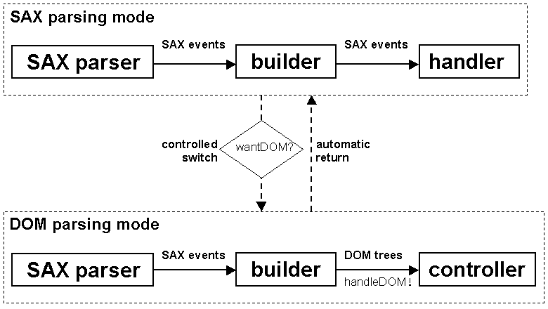

|
Devsphere.com |
|||||||||
| PREV CLASS NEXT CLASS | FRAMES NO FRAMES | |||||||||
| SUMMARY: NESTED | FIELD | CONSTR | METHOD | DETAIL: FIELD | CONSTR | METHOD | |||||||||
java.lang.Object
|
+--org.xml.sax.HandlerBase
|
+--com.devsphere.xml.saxdomix.SDXOldBuilder
This class provides the mixed SAX 1.0 - DOM Level 1 parsing functionality. It needs JAXP 1.0 support.

Each builder object needs from the application a SAX document
handler (org.xml.sax.DocumentHandler) and a controller
(com.devsphere.xml.saxdomix.SDXOldController). Any builder
also has an internal wantDOM flag.
The application receives the SAX events via the document handler
as long as the wantDOM flag is false.
During the SAX parsing, the builder object invokes the controller's
wantDOM() method for each startElement()
parsing event. If wantDOM() returns false
the SAX parsing mode continues. When wantDOM() returns
true the value of the internal wantDOM flag
is switched to true and the builder starts creating a DOM
sub-tree from the SAX events, which aren't forwarded to the application
anymore.
The building of the sub-tree ends after the endElement()
event that corresponds to the startElement() event whose
associated wantDOM() call returned true.
The DOM sub-tree, whose root is an org.w3c.dom.Element
object is passed to the controller's handleDOM() method.
After this, the wantDOM flag is switched automatically to
false re-enabling the SAX parsing. The application will
receive SAX events until the controller's wantDOM() returns
true for another element or the end of the parsed document
is reached.
A DOM sub-tree is made of three types of DOM objects:
org.w3c.dom.Element
org.w3c.dom.Text
org.w3c.dom.ProcessingInstructionThese DOM objects are created with a helper object. In most cases
you'll let the framework to use its own DefaultSDXOldHelper,
but you may provide your own implementation of the SDXOldHelper
interface, which is declared in the
com.devsphere.xml.saxdomix.helpers package.
The entity references are expanded. The comments are ignored.
The character data of the CDATA sections is stored in
org.w3c.dom.Text nodes. The DOM sub-trees cannot contain
org.w3c.dom.CDATASection and org.w3c.dom.Comment
nodes because SAX 1.0 doesn't support lexical handlers, which report
the comments and the boundaries of the CDATA sections in SAX 2.0.
In conclusion, the builder is initially in SAX parsing mode, which means
that SAX events are forwarded to a document handler provided by the
application. During the SAX parsing, the wantDOM() method of
a controller object is called for each element start.
When wantDOM() returns true, the builder retains
the SAX events and uses them to build a DOM sub-tree, which is then passed
for handling to the handleDOM() method of the controller object.
During the DOM building, the wantDOM() method is NOT called.
The builder switches to the SAX parsing mode automatically when the DOM
sub-tree is completed. This process is repeated until the end of the parsed
document, which means that multiple DOM sub-trees can be constructed during
the parsing of a single XML document. All SAX events that aren't used to
build the sub-trees are passed to the application's document handler.
SDXOldBuilder extends the HandlerBase SAX
class but overrides only the methods of the DocumentHandler
SAX interface. A SAX parser is needed in order to feed the builder
with SAX events. Some of these events will be forwarded to the application's
document handler and the others will be used to build the DOM sub-trees
as described above.
There are two ways to use SDXOldBuilder: you may pass it to
the parse() method of a JAXP SAXParser or you may
register it as document handler to a SAX Parser and then call
its parse() method. In the second case you could create
a JAXP SAXParser and then obtain the SAX Parser
using the getParser() method of the SAXParser
object.
Usage 1:
org.xml.sax.DocumentHandler handler = ...
SDXOldController controller = ...
org.xml.sax.HandlerBase builder
= new SDXOldBuilder(handler, controller);
javax.xml.parsers.SAXParser saxParser = ...
java.io.InputStream in = ...
saxParser.parse(in, builder);
If the default error handling or entity resolving mechanisms
don't suit the needs of your application or you need information about
unparsed entities and notations, then you should subclass
SDXOldBuilder and override the methods defined
by the ErrorHandler, EntityResolver
and DTDHandler SAX interfaces.
Usage 2:
org.xml.sax.DocumentHandler handler = ...
SDXOldController controller = ...
org.xml.sax.DocumentHandler builder
= new SDXOldBuilder(handler, controller);
org.xml.sax.Parser parser = ...
parser.setDocumentHandler(builder);
parser.setErrorHandler(...);
org.xml.sax.InputSource in = ...
parser.parse(in);
In this case, you should always register an error handler. (If you don't
have one then register a HandlerBase as error handler.)
If the default entity resolving mechanism doesn't suit the needs of your application and you need information about unparsed entities and notations, then register an entity resolver and a DTD handler to the parser.
SDXOldController,
SDXOldHelper,
DefaultSDXOldHelper| Field Summary | |
protected SDXOldController |
controller
The controller provided by the application |
protected org.xml.sax.DocumentHandler |
handler
The SAX document handler provided by the application |
protected SDXOldHelper |
helper
The helper object used as factory for DOM nodes |
protected ElementStack |
stack
A stack of DOM Element nodes |
protected boolean |
wantDOM
The flag that indicates the current parsing mode (false means SAX; true means DOM) |
| Constructor Summary | |
SDXOldBuilder(org.xml.sax.DocumentHandler handler,
SDXOldController controller)
Creates a builder that forwards the SAX events to the given handler, switches to DOM when the wantDOM() method of the given
controller returns true and also passes the DOM sub-trees to the
controller's handleDOM() method. |
|
SDXOldBuilder(org.xml.sax.DocumentHandler handler,
SDXOldController controller,
SDXOldHelper helper)
Creates a builder that forwards the SAX events to the given handler, switches to DOM when the wantDOM() method of the given
controller returns true and also passes the DOM sub-trees to the
controller's handleDOM() method. |
|
| Method Summary | |
void |
characters(char[] ch,
int start,
int length)
Calls the method with the same name of the handler object or creates a DOM Text node depending on the value
of the wantDOM flag. |
void |
endDocument()
Calls the method with the same name of the handler object. |
void |
endElement(java.lang.String name)
Calls the method with the same name of the handler object or passes the DOM sub-trees to the controller's handleDOM()
method depending on the value of the wantDOM flag. |
void |
processingInstruction(java.lang.String target,
java.lang.String data)
Calls the method with the same name of the handler object or creates a DOM ProcessingInstruction node depending on
the value of the wantDOM flag. |
void |
setDocumentLocator(org.xml.sax.Locator locator)
Calls the method with the same name of the handler object passing the given locator as parameter. |
void |
startDocument()
Calls the method with the same name of the handler object and initializes some of the fields of this object. |
void |
startElement(java.lang.String name,
org.xml.sax.AttributeList attributes)
Calls the method with the same name of the handler object or creates a DOM Element node depending on the value
of the wantDOM flag. |
| Methods inherited from class org.xml.sax.HandlerBase |
error, fatalError, ignorableWhitespace, notationDecl, resolveEntity, unparsedEntityDecl, warning |
| Methods inherited from class java.lang.Object |
clone, equals, finalize, getClass, hashCode, notify, notifyAll, toString, wait, wait, wait |
| Field Detail |
protected org.xml.sax.DocumentHandler handler
protected SDXOldController controller
protected SDXOldHelper helper
protected boolean wantDOM
SAX; true means DOM)
protected ElementStack stack
Element nodes
| Constructor Detail |
public SDXOldBuilder(org.xml.sax.DocumentHandler handler,
SDXOldController controller)
wantDOM() method of the given
controller returns true and also passes the DOM sub-trees to the
controller's handleDOM() method. The created builder
will use a DefaultSDXOldHelper to create the DOM nodes.
handler - The application's SAX DocumentHandlercontroller - The application's SDXController
java.lang.NullPointerException - If one of the parameters is null
public SDXOldBuilder(org.xml.sax.DocumentHandler handler,
SDXOldController controller,
SDXOldHelper helper)
wantDOM() method of the given
controller returns true and also passes the DOM sub-trees to the
controller's handleDOM() method. The created builder
will use the given helper to create the DOM nodes.
handler - The application's SAX DocumentHandlercontroller - The application's SDXControllerhelper - The application's optional SDXOldHelper
java.lang.NullPointerException - If one of the parameters is null| Method Detail |
public void setDocumentLocator(org.xml.sax.Locator locator)
setDocumentLocator in interface org.xml.sax.DocumentHandlersetDocumentLocator in class org.xml.sax.HandlerBaselocator - The SAX Locator object
public void startDocument()
throws org.xml.sax.SAXException
startDocument in interface org.xml.sax.DocumentHandlerstartDocument in class org.xml.sax.HandlerBaseorg.xml.sax.SAXException - Error reported by the handler's method
public void endDocument()
throws org.xml.sax.SAXException
endDocument in interface org.xml.sax.DocumentHandlerendDocument in class org.xml.sax.HandlerBaseorg.xml.sax.SAXException - Error reported by the handler's method
public void startElement(java.lang.String name,
org.xml.sax.AttributeList attributes)
throws org.xml.sax.SAXException
Element node depending on the value
of the wantDOM flag.
startElement in interface org.xml.sax.DocumentHandlerstartElement in class org.xml.sax.HandlerBasename - The element's nameattributes - The element's attributes
org.xml.sax.SAXException - Error reported by the handler's method
public void endElement(java.lang.String name)
throws org.xml.sax.SAXException
handleDOM()
method depending on the value of the wantDOM flag.
endElement in interface org.xml.sax.DocumentHandlerendElement in class org.xml.sax.HandlerBasename - The element's name
org.xml.sax.SAXException - Error reported by the handler's method
public void characters(char[] ch,
int start,
int length)
throws org.xml.sax.SAXException
Text node depending on the value
of the wantDOM flag.
characters in interface org.xml.sax.DocumentHandlercharacters in class org.xml.sax.HandlerBasech - The characters from the XML documentstart - The start position in the arraylength - The number of characters to get from the array
org.xml.sax.SAXException - Error reported by the handler's method
public void processingInstruction(java.lang.String target,
java.lang.String data)
throws org.xml.sax.SAXException
ProcessingInstruction node depending on
the value of the wantDOM flag.
processingInstruction in interface org.xml.sax.DocumentHandlerprocessingInstruction in class org.xml.sax.HandlerBasetarget - The target of the processing instruction.data - The data of the processing instruction.
org.xml.sax.SAXException - Error reported by the handler's method
|
Devsphere.com |
|||||||||
| PREV CLASS NEXT CLASS | FRAMES NO FRAMES | |||||||||
| SUMMARY: NESTED | FIELD | CONSTR | METHOD | DETAIL: FIELD | CONSTR | METHOD | |||||||||